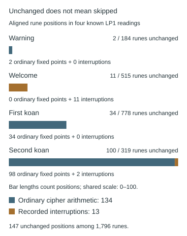

Keystream positions and interruptions
Which symbols consume the next key or prime value?
On this page
Keep separate counters
The rune ordinal identifies a rune in the input section. The keystream position identifies the next shift. Both normally advance for each rune. At a recorded interruption, the rune is copied and its ordinal advances, but the keystream does not.
Spaces, line breaks, punctuation and decimal digits do not consume rune positions in these controls. Position 56 means the 57th rune, not the 56th file character.
Recorded examples
The welcome list is [48, 74, 84, 132, 159, 160, 250, 421, 443, 465, 514] across its two pages. LP2-56 copies ordinal 56. The parameter file records all lists and whether sequences carry or reset at boundaries.
What does “skip” mean?
In the controls above, it means copy the rune and leave the next shift unused. It does not mean delete the rune. Nor does it mean consume a shift while leaving the rune unchanged. These alternatives can produce different output for every subsequent position.
Consider the artificial input indices 10, 0, 10, 10, the repeating key 1, 2, 3, and an interruption at input ordinal 1. Subtract shifts modulo 29. The same input and key produce these different results:
| Rule at ordinal 1 | Output indices | Next shift after the interruption |
|---|---|---|
| Copy; do not advance key | 9, 0, 8, 7 | 2 |
| Copy; advance key | 9, 0, 7, 9 | 3 |
| Delete; do not advance key | 9, 8, 7 | 2, but the output is shorter |
Replacing a shift with zero while consuming its key position behaves like the second row, not the first. A proposal that says “use zero on F” must therefore specify whether the original key position is consumed. The 301 sequence discussion encounters exactly this ambiguity.
Follow both counters
Here is the first rule step by step. “Key position” is a count of consumed shifts; it is reduced modulo the key length only when selecting a key value.
| Input ordinal | Input | Key position before | Action | Output |
|---|---|---|---|---|
| 0 | 10 | 0 | Subtract 1 | 9 |
| 1 | 0 | 1 | Copy; keep key position 1 | 0 |
| 2 | 10 | 1 | Subtract 2 | 8 |
| 3 | 10 | 2 | Subtract 3 | 7 |
This runnable Python 3 example compares the two copy rules. It is a demonstration with artificial indices, not a proposed decoding of an unsolved page.
def decode(values, key, copied, advance_on_copy=False):
output = []
key_position = 0
for ordinal, value in enumerate(values):
if ordinal in copied:
output.append(value)
if advance_on_copy:
key_position += 1
else:
shift = key[key_position % len(key)]
output.append((value - shift) % 29)
key_position += 1
return output
values, key, copied = [10, 0, 10, 10], [1, 2, 3], {1}
paused = decode(values, key, copied)
consumed = decode(values, key, copied, advance_on_copy=True)
print(paused) # [9, 0, 8, 7]
print(consumed) # [9, 0, 7, 9]
assert paused == [9, 0, 8, 7]
assert consumed == [9, 0, 7, 9]Discarding a key value is a different rule
A cipher can advance its key without writing a ciphertext rune. One proposed reason is to avoid repeating the previous ciphertext rune: discard a key value and retry the same plaintext rune. That differs from copying an F rune and pausing the key.
The worked key-alignment example follows both counters. The numeric-key search and artifact-key followup test a particular conditional-skip decoder, with a stated limit on rejected key values.
A page boundary is not automatically a restart
The Welcome control carries its section ordinal across LP1-03 and LP1-04. LP1-03 contributes 251 runes, so LP1-04’s first rune has page ordinal 0 but section ordinal 251. An interruption list defined for the whole section must use the latter counter. Restarting at zero on the second page would apply the list to different runes.
In the recorded trace, Welcome ordinal 47 is an F rune transformed with shift 26 to output index 3 (O). Ordinal 48 is another F, but is explicitly copied; ordinal 49 then uses shift 23. This is evidence for a specified position list, not a rule that every F is copied. See the Welcome counter diagram and walkthrough.
A copied rune still occupies a position in the input. Removing it before counting changes later ordinals. Similarly, counting punctuation or the Latin letters in a multi-letter rune label would create a different coordinate system. Use rune indices and the trace’s named columns rather than offsets in a displayed English sentence.
An unchanged rune is not necessarily an interruption
Compare an input rune with its aligned output rune. If their indices are equal, the rune is unchanged. That observation does not tell you whether the decoder paused its key counter. The ordinary transformation may itself leave that index unchanged: this is a fixed point.
We checked all 1,796 rune positions in the Warning, Welcome, first koan and second koan—the four sections used by the 464-word experiment. There are 147 unchanged positions: 134 ordinary fixed points and 13 recorded interruptions. These are counts of rune positions, not unchanged words or different rune types.

Why the ordinary rules can preserve a rune
Ordinary Atbash maps index 14 to itself: 28 − 14 = 14. The first koan’s shifted Atbash maps index 1 to itself: (28 − 1 + 3) mod 29 = 1. Neither operation needs an interruption at those positions.
For Vigenère, subtracting a key value of zero leaves every input index unchanged: (c − 0) mod 29 = c. The Welcome’s key contains no zero-valued slots. The second koan’s repeating key has four zero-valued slots among thirteen, producing its 98 ordinary unchanged positions under the recorded alignment. Its two interruptions are counted separately. At a zero-valued key slot the key counter advances; at a recorded interruption it stays put.
The trace’s copied column records membership in the interruption list. It is not a test of whether the input and output indices are equal. Use the index columns for equality and the key-counter columns for advancement; see the trace-column guide.
What do the unchanged runes sum to?
Assign each of the 134 ordinary fixed points its Gematria Primus prime value, counting every occurrence. Their total is 4,826, an even composite number. The 13 recorded interruptions are all F runes, worth 2 each, and total 26 separately. A proposed total of 4,759 does not reproduce for this 134-position set. Without an exact alternative list of positions and counting rules, the discrepancy cannot be explained by the total alone.
Adding “An End”: a separate population
The known reading of LP2-56, “An End”, adds 85 runes and four unchanged positions. Three are ordinary transformations: subtracting a multiple of 29 preserves a rune’s index. Only the fourth is an interruption.
| Rune position (zero-based) | Subtracted value | Key counter | Reason unchanged |
|---|---|---|---|
| 16 | 58 = 2 × 29 | 16 → 17 | Zero shift modulo 29 |
| 50 | 232 = 8 × 29 | 50 → 51 | Zero shift modulo 29 |
| 56 | None | 56 → 56 | Recorded interruption |
| 70 | 348 = 12 × 29 | 69 → 70 | Zero shift modulo 29 |
The combined five-section population has 1,881 runes and 151 unchanged positions: 137 ordinary fixed points and 14 interruptions. It is not the original four-section, 464-word population. Adding a page changes the object being measured; these counts do not establish a grille or the significance of a pattern.
Reproduce and inspect the positions
Extract the reference-data ZIP with folders intact. Python 3 standard library is sufficient; no source download or hosted service is needed for this audit. Choose a new output filename:
python scripts/audit_reading_fixed_points.py --output fixed-point-replay.jsonTo check the prime-value totals and every LP2-56 trace row, run the extension auditor. Its saved report includes per-rune subtotals, all four added positions and input hashes. Both files are included in the reference-data ZIP.
python scripts/audit_fixed_point_extension.py --output fixed-point-extension-replay.jsonThe audit script checks every saved trace against the archived rune stream, declared cipher arithmetic, interruption list and key counters. The original reproduction code was also rerun: its complete traces and literal readings agree. Download all 147 positions, section totals and input hashes. Page and section ordinals are zero-based; section ordinals carry across the pages in these controls. The figure script checks the saved audit again before drawing.
This is a descriptive check of known readings, not a statistical test or a newly discovered skip rule. Using these positions as a grille would additionally require a specified carrier, placement, orientation and readout order. The counts alone do not define that procedure.
Inspect alignment
python scripts/reproduce_reading.py welcome --trace
python scripts/reproduce_reading.py lp2-56 --traceAfter a copied rune, the next transformed rune receives the unconsumed shift. See Vigenère and prime-minus-one.
No universal skip rule
A new skip list is an additional hypothesis. If chosen after viewing the output, disclose that choice and test its predictions on independent material.
For the page images, exact six F positions and a step-by-step comparison, see the LP2-54–55 feedback study.
Ciphertext-feedback tests on LP2-54–55
Interruptions can also change a cipher’s feedback state rather than a repeating-key counter. Two bounded experiments test all 64 subsets of six F positions: reset the previous ciphertext value to zero, or retain it across the interruption. Each searches periods 2–30 and repeats that full search on shuffled inputs.
Both have their largest observed periodic IoC at period 13 with no interruptions selected. Neither maximum is unusual under its stated shuffle model (p = 0.544 and 0.558 respectively). The records explain the recurrences, show a small reversible example, and provide scripts, charts and exact bounds. These findings concern those particular tests, not a general rejection of interruptions or autokey.
Sources and verification
Pinned historical walkthrough. Recipes reproduce published controls; they are not new solutions. Local computational verification: 19 October 2026.
For rules that actually remove symbols, see null symbols, deletion and padding. Their position choices and retained lengths require separate bounds.
Manuscript pages discussed
LP1-03 · LP1-04 · LP1-14 · LP1-15 · LP2-56
Guides linking here
- Solving methods: a map of families and variants
- Running the reproduction scripts
- Arithmetic modulo 29
- Atbash and shifted Atbash
- Vigenère on the rune alphabet
- Prime-minus-one decoding
- Euler’s totient and prime-minus-one
- Prime values and prime indices
- Periodic IoC: columns, weighting, and trial periods
- Cuneiform-like mark
- Rubrication: red lettering, numbers, and boundaries
- Pilgrimage, selfhood, and the Welcome
- Word lengths and corpus comparisons
- LP2-54–55: interruption and ciphertext-feedback tests
- Arithmetic keystreams
- Switching rules and adaptive decoding
- Null symbols, deletion and padding
- Reported attempts awaiting exact replay
- Welcome, Pilgrim: complete reading
- A Koan: second section: complete reading
- An End: the hash reference: complete reading